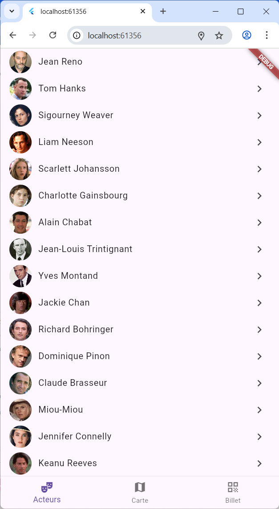
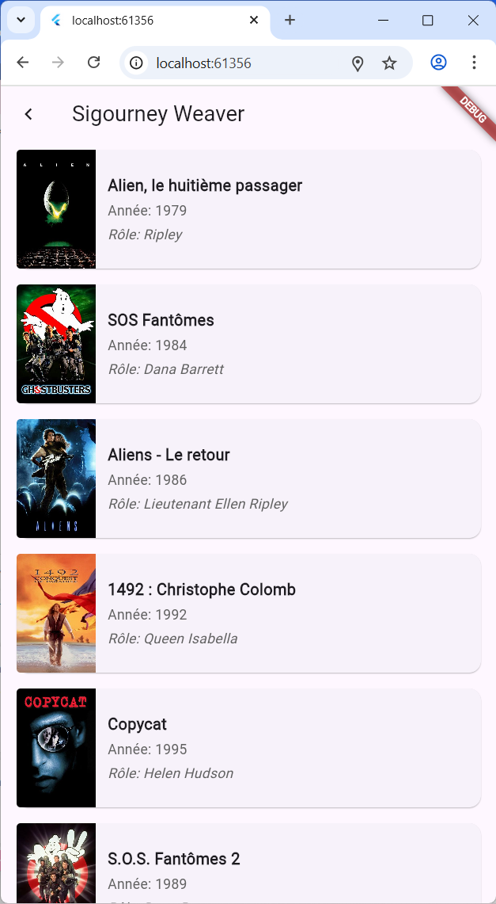
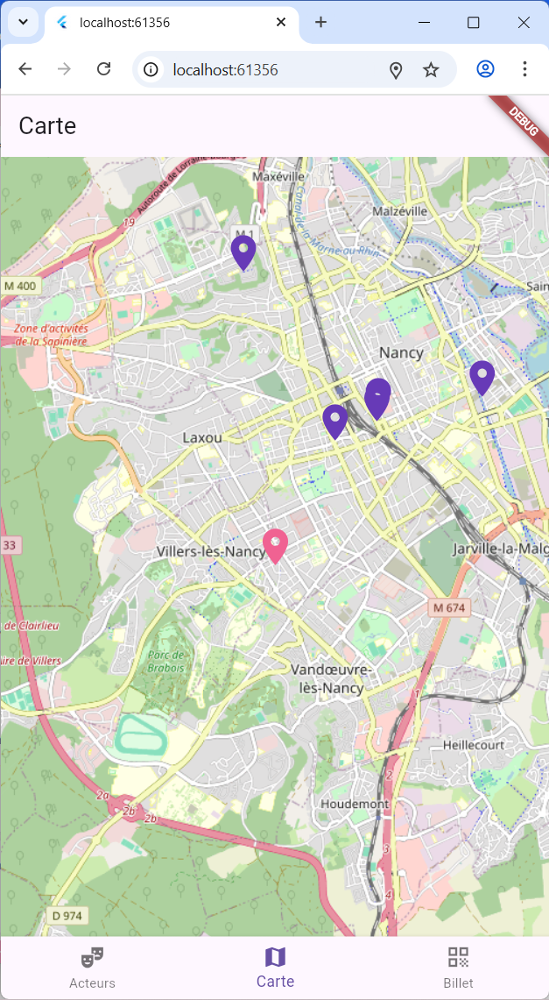

Application gestion d'un cinéma
Application mobile de gestion de films et d'acteurs, développée avec Flutter

Aperçu du projet


Description du projet
C'est une application mobile multiplateforme réalisée en Flutter et Dart pour le suivi et la gestion de données cinématographiques. L'objectif était de concevoir une application moderne permettant de visualiser des informations sur les films et les acteurs, de gérer leurs relations (qui a joué dans quoi), et d'intégrer des fonctionnalités spécifiques comme un scanner de billets et une carte interactive des cinémas proches.
Ce projet a été l'occasion d'approfondir mes compétences en développement mobile, en me concentrant sur la création d'une interface utilisateur fluide et réactive, la gestion d'un état complexe et l'intégration de services externes (APIs de cinéma). Le stockage des données a été géré via PostgreSQL.
Technologies utilisées
Fonctionnalités clés
- Consultation de Fiches Cinéma : Films, acteurs, relations films/acteurs.
- Scanner de Billets/QR Code : Simulation d'une fonctionnalité de validation ou d'accès.
- Carte Interactive : Affichage des cinémas (via intégration Map).
- Gestion des Données : Utilisation de PostgreSQL pour le stockage et la récupération des informations.
Défis techniques rencontrés
- Intégration Matérielle : Utilisation de la caméra (scanner) et de la géolocalisation (carte).
- Consommation API & BDD : Structuration des appels asynchrones aux APIs et à la base de données PostgreSQL.
- Responsive Design : Assurer un affichage optimal sur les différents formats de smartphones et tablettes.
Compétences développées
Développement mobile
Flutter, Dart
Gestion de Données
PostgreSQL, Modélisation de base de données relationnelle, Appels API REST
UX/UI Mobile
Design d'interface intuitif
Architecture
Structure de projet Flutter, séparation des couches (MVC/MVVM).
Conclusion du Projet
Ce projet a été une excellente initiation au développement d'applications mobiles complètes avec Flutter. J'ai acquis de l'expérience dans la gestion des interactions avec le matériel (caméra, GPS), l'intégration de services tiers (APIs externes, services de cartographie) et la manipulation de données via une base de données PostgreSQL. L'accent a été mis sur la qualité du code et l'expérience utilisateur.